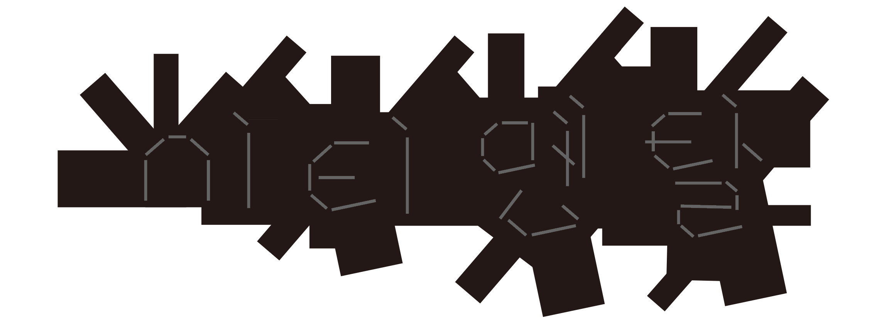

Dabin Kim 多彬 - Typography ↔ Print + Digital --- Dabin Kim 多彬 - Typography ↔ Print + Digital --- Dabin Kim 多彬 - Typography ↔ Print + Digital --- Dabin Kim 多彬 - Typography ↔ Print + Digital ---
Dabin Kim → is Typography Apprentice. I tries to expand the boundary of visual language, work in and out between digital surface and tangible surface. Currently based in Seoul, Korea.
Contact → dabinkiim@gmail.com • Instagram • Tumblr
To actually visit the Web below → Github
I value small practices and run few groups with friends. To check more on instagram, Typography _ , Coding _
Visit Archive → Press the eye👁 below to unfold the screen.
Ci·ti·men·tal, 2020, Series of two books.

Team Project : Dabin Kim, Chawon Jeon, Sunyong Mun, Jihyun Seo.
The ‘Ci·ti·men·tal’ was conducted by team <在在所所> with the support of the Hongik university innovation support project.
‘Ci·ti·men·tal’ is about space, and at the same time, it’s about people. Through a space called “home,” which shares all our life forms, we want to face social realities from various perspectives.
‘Ci·ti·men·tal’ consists of volume one that contains four speakers' personal stories about space and volume two that extend the story from an administrative, family and sociological perspective. ‘Ci·ti·men·tal’ is basically "urban sentiment," which refers to the urban space in which speakers in their 20s live in a powerful way with individual sentiment.
Project participants recognized the emergence of a new generation after the 'Apartment Kid'(Born in 60-70s in korea, near my parent generations who first starts to live in apartment) from the perspective of this 'urban sentiment' and sought to form a space discourse for the new generation through the process of creating the book based on empathy.


(Volume 1 inside)
Table of contents: “Square 2020,” “Mr. real Kim,” “Because I Can’t move out,” and “Homomafia in Public Housing.”


(Volume 2 inside)
Table of contents: "the formation process of special educational zones," "Gentrification and the practice of art," "The change of family due to the formation of new towns and residential independence," and "The study of sexual dissidents and housing welfare."